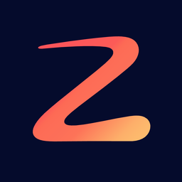
자국 · Zaguk
Apple 건강에 저장된 러닝 기록을 세로 영상과 이미지로 만들어 줘요. 사진 한 장만 더하면 나만의 러닝 인증이 완성돼요.
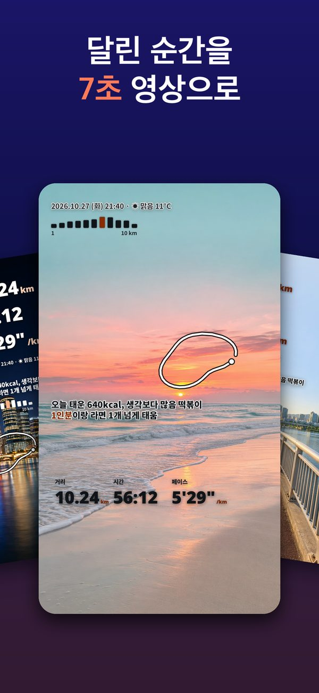
건강 앱에 저장된 러닝을 그대로 불러와요. 직접 입력할 필요가 없어요.
거리, 시간, 페이스, 날짜를 템플릿에 맞춰 보여줘요. 스토리, 릴스, 숏츠에 올리기 좋은 세로 비율이에요.
필름 사진, 하늘, 일기예보, 지하철 노선도, 몽타주 등 다양한 스타일 중에서 골라요.
한 줄 문구와 글꼴, 색을 바꾸고 보여줄 기록을 직접 고를 수 있어요.
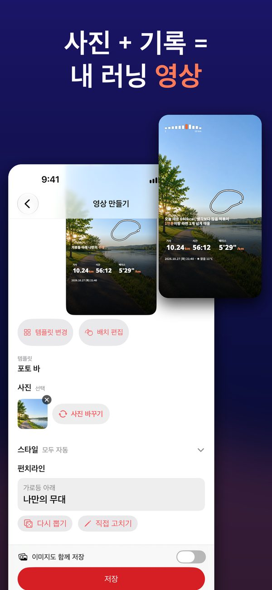
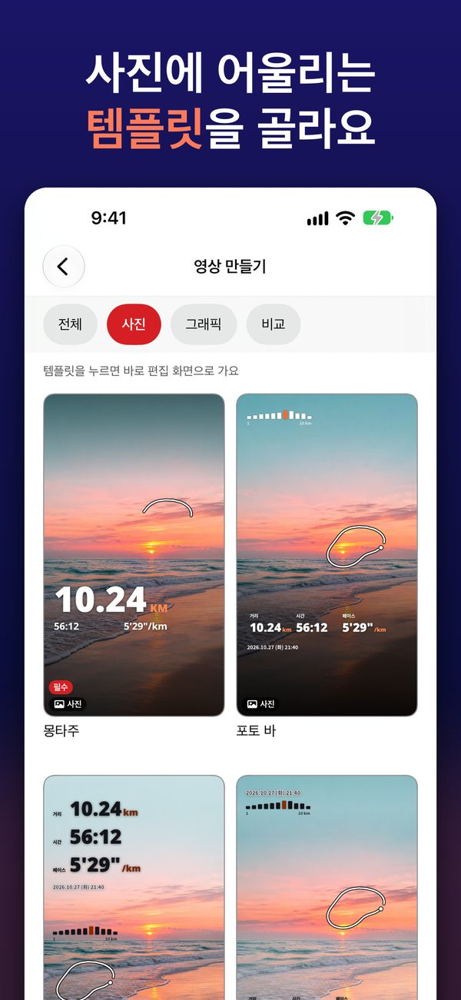
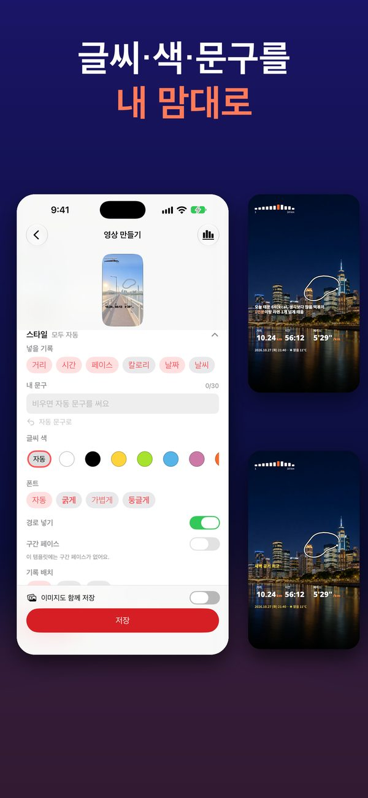
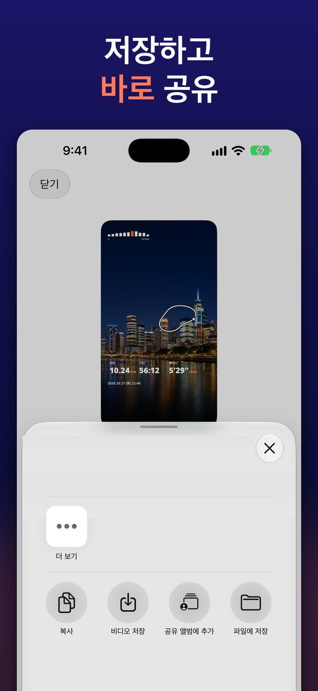
앱은 무료예요. 일부 템플릿은 영상을 저장하기 전에 짧은 광고를 보면 쓸 수 있고, 광고 없이 쓸 수 있는 템플릿도 있어요.
의료 목적의 앱이 아니며, 표시되는 수치는 건강 앱의 기록을 바탕으로 한 참고용이에요.
Zaguk
Zaguk turns the runs saved in Apple Health into vertical videos and images. Add one photo and your run is ready to share.
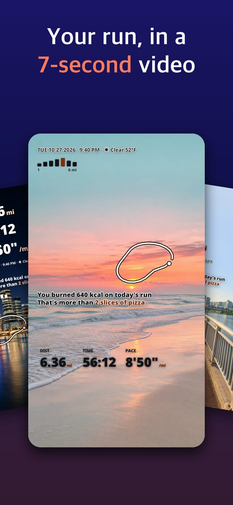
Zaguk reads the runs already saved in Apple Health. Nothing to type in.
Distance, time, pace and date are laid out by each template, in a vertical format made for Stories, Reels and Shorts.
Film photo, sky, weather forecast, subway map, montage and more.
Change the caption, font and color, and choose which stats to show.
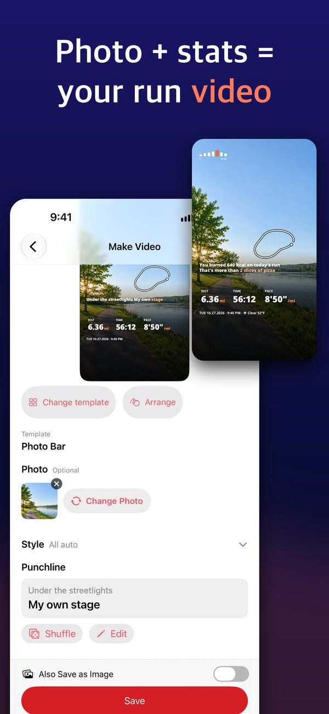
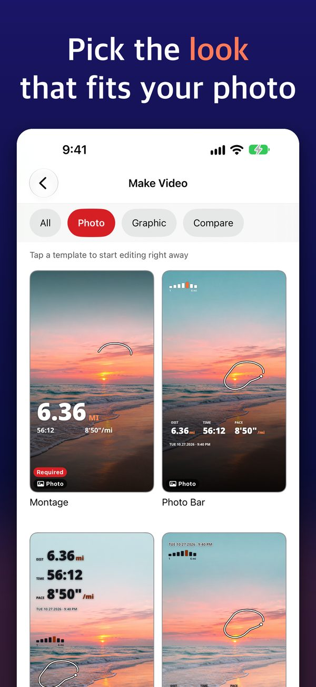
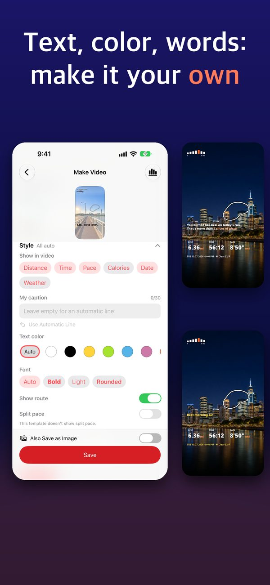
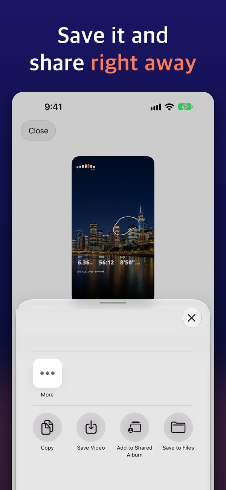
Zaguk is free. Some templates need you to watch a short ad before you save the video. Some templates are available without any ad.
Zaguk is not a medical app. The numbers shown are based on your Apple Health records and are for reference only.
Zaguk（ジャグク）
Appleヘルスケアに保存されたランニングの記録を、縦型の動画と画像にします。写真を1枚足すだけで、あなただけのランの記録が完成します。
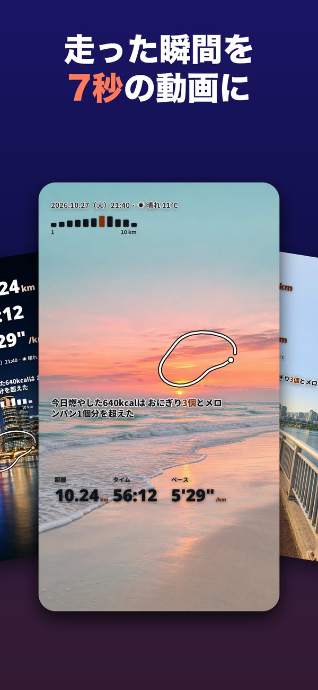
ヘルスケアに保存されたランをそのまま読み込みます。入力の手間はありません。
距離、時間、ペース、日付をテンプレートに合わせて表示。ストーリーズ、リール、ショートに向いた縦型です。
フィルム写真、空、天気予報、路線図、モンタージュなど、さまざまなスタイルから選べます。
ひとことの文章、フォント、色を変えて、表示する記録も選べます。
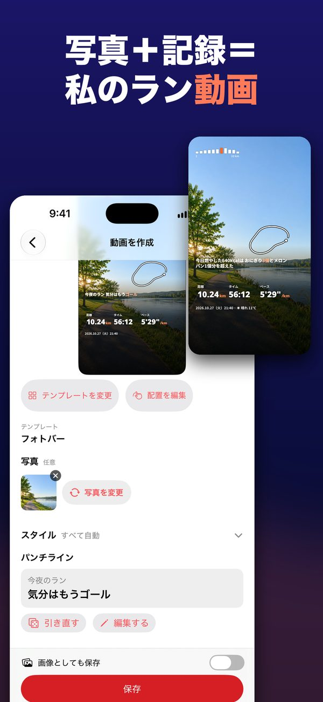
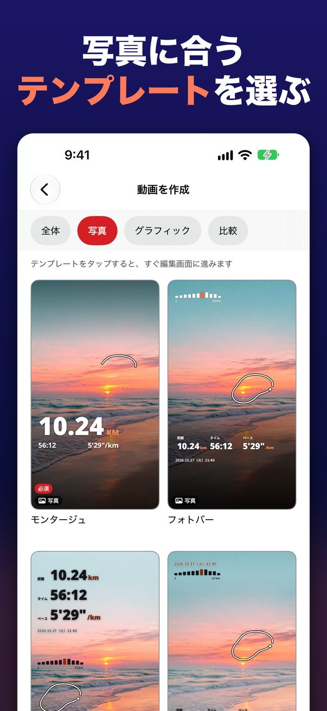
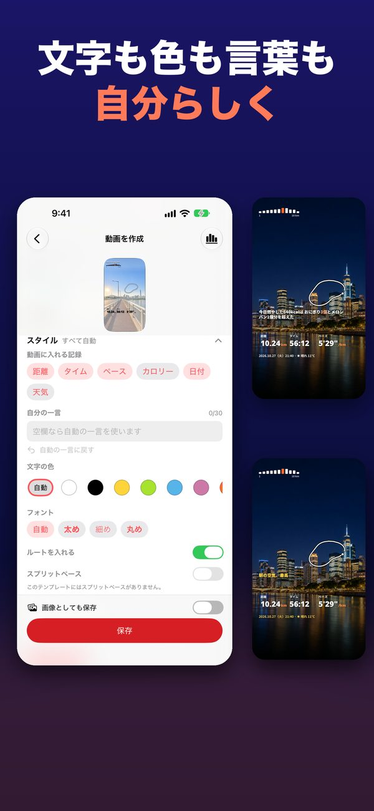
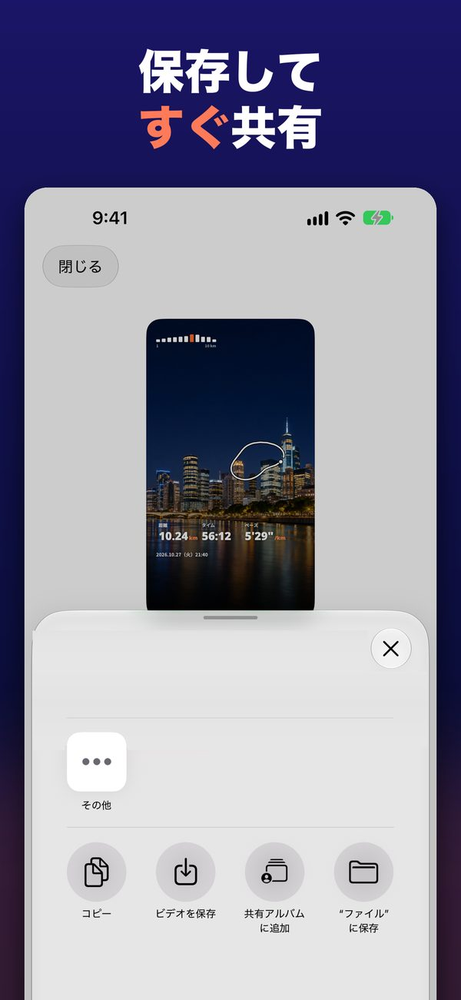
アプリは無料です。一部のテンプレートは、動画を保存する前に短い広告を見ると使えます。広告なしで使えるテンプレートもあります。
医療目的のアプリではありません。表示される数値はヘルスケアの記録に基づく参考値です。